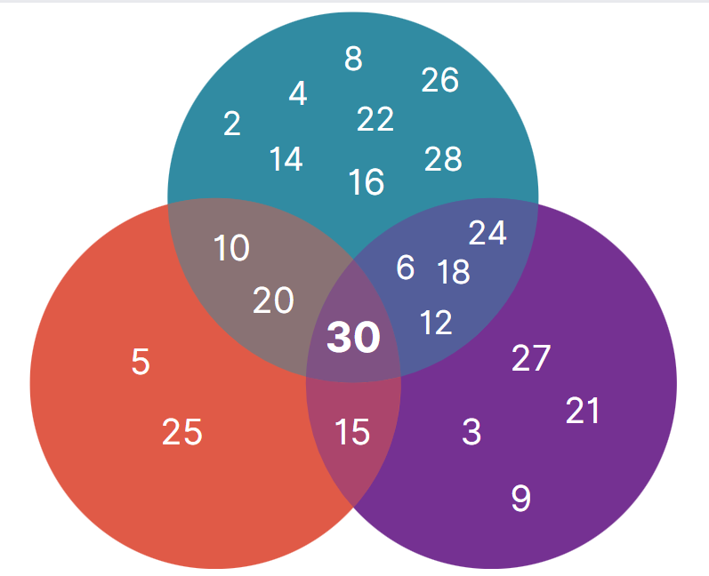

Matematický obor kombinatorika skúma podmnožiny prvkov konečnej množiny s nejakými definovanými vlastnosťami. Základné kombinatorické úlohy spočívajú v hľadaní počtu prvkov, ktoré spĺňajú zadané vlastnosti.
Hlbšie štúdium kombinatoriky sa začalo približne v 16. storočí, najmä v oblasti hazardných hier. Hráči skúmali pravdepodobnosť výhry či možné výskyty číselných hodnôt pri hode kockou. Neskôr tento obor začal skúmať aj iné matematické otázky a v súčasnosti sa úlohy s kombinatorickými problémami vyskytujú najmä v teórií pravdepodobnosti, tiež informatike, teórií čísel, geometrii a algebre.
V kombinatorike poznáme niekoľko základných tried, do ktorých prvky vieme rozdeliť. V týchto triedach sú rozhodujúce dve hlavné charakteristiky - dôležitosť poradia prvkov a možnosť opakovania prvkov.
Vzniknú teda skupiny:
- kombinácie - nezáleží na poradí, bez opakovania prvkov
- kombinácie s opakovaním - nezáleží na poradí, s opakovaním prvkov
- variácie - záleží na poradí, bez opakovania prvkov
- variácie s opakovaním - záleží na poradí, s opakovaním prvkov
- permutácie - bijektívne zobrazenia množiny na samú seba
- permutácie s opakovaním - možnosť opakovania prvkov
Počet všetkých usporiadaných $k$-tic, ktorých prvého člena môžeme vybrať $n_{1}$ spôsobmi, druhého člena po výbere prvého $n_{2}$ spôsobmi atď ... až $k$-tého člena $n_{k}$ spôsobmi, je rovný: \[n_{1}\times n_{2}\times ... \times n_{k}\]
príklad
V zmrzlinárni ponúkajú $4$ druhy zmrzliny a $3$ polevy. Koľko rôznych zmrzlín s polevou si vieme kúpiť, ak chceme len jeden druh zmrzliny s jednou polevou ?
riešenie
V tomto prípade dvojice, ktorých počet hľadáme, predstavuje dvojica $(zmrzlina, poleva)$.
čokoládová
karamelová
ovocná
čokoládová
karamelová
ovocná
čokoládová
karamelová
ovocná
čokoládová
karamelová
ovocná
Ku každému zo $4$ druhov zmrzliny môžeme priradiť jednu z $3$ polev, celkovo je potom možné vytvoriť $4\times 3 = 12$ rôznych zmrzlín s polevou.
Nech $A_{1}, A_{2}, ... A_{n}$ sú konečné množiny, majú $p_{1}, p_{2}, ... p_{n}$ prvkov a každé dve sú disjunktné, potom počet prvkov množiny $A_{1}\cup A_{2} \cup ... \cup A_{n}$ sa rovná \[p_{1} + p_{2} + ... + p_{n}\]
príklad
Hádžeme dvoma hracími kockami. Koľko je možnosti aby padol súčet väčší ako $7$?
riešenie
Súčet väčší ako $7$ je súčet $8, 9, 10, 11$ a $12$. Určíme počet možnosti pre každý súčet.
- Súčet $8$ .......... $(6+2), (5+3), (4+4)$ ............ $3$ možnosti
- Súčet $9$ .......... $(6+3), (5+4)$ ................. $2$ možnosti
- Súčet $10$ ........ $(6+4), (5+5)$ ................ $2$ možnosti
- Súčet $11$ ........ $(6+5)$ ..................... $1$ možnosť
- Súčet $12$ ........ $(6+6)$ ..................... $1$ možnosť
Spolu $3 + 2 + 2 + 1 + 1 = 9$
Súčet väčší ako $7$ môže padnúť deviatimi spôsobmi.
Kombinácie
Predstavujú neusporiadané výbery k prvkov z n-prvkovej množiny. Počet takýchto kombinácií sa vyjadruje kombinačným číslom. Toto číslo sa označuje $C(n, k)$ alebo $\binom{n}{k}$. Nazývame ho tiež binomický koeficient.
Pre ľubovoľné $n$ platí:
$ C(n, k) = \binom{n}{k}$
$ C(n,0)=C(n,n)=1$ ,$C(n,1)=n$, ak $0\leq r \leq n$
$ C(n,r)=0 $, ak $ r>n $
$ C(n,k)=C(n,n-k) $
Symbol $n!$ označuje pojem faktoriál. Faktoriál čísla $n$ predstavuje súčin prvých $n$ prirodzených čísel.
Platí, že $0! = 1$.Kombinačné číslo vieme vyjadriť ako: \[ \binom{n}{k} = \frac{n!}{(n-k)!k!} \]
Platí, že: \[\binom{n}{k} = \binom{n}{n-k}\]
Pre všetky celé nezáporné čísla $n, k, k≤n$, platí: \[\binom{n}{k} + \binom{n}{k+1} = \binom{n+1}{k+1}\]
Ďalšou významnou rovnosťou je Pascalova formula pre výpočet binomického koeficienta:
\[\binom{n}{k} = \binom{n-1}{k-1} + \binom{n-1}{k}, k\geq 1\] \[\binom{n}{0} = 1\]
príklad
V izbe v hosteli sa nachádza $10$ postelí. Koľko je možných skupín postelí, ktoré bude musieť upratovačka prezliecť, ak v izbe budú spať $6$ turisti?

Aby sme mohli túto úlohu vyriešiť, musíme najprv určiť, ktoré spôsoby obsadenia postelí budeme považovať za rôzne. Z pohľadu upratovačky hostela je dôležité, na ktorých posteliach sa spalo a ktoré musí prezliecť, nezáleží jej na tom, ktorý konkrétny turista sa uložil na danú posteľ. Preto hľadáme počet neusporiadaných šestíc postelí, ktoré môžeme zostaviť zo všetkých desiatich postelí - inými slovami teda počet všetkých $6$-prvkových podmnožín $10$-prvkovej množiny postelí v izbe. Prvky sa v podmnožinách nebudú mocť opakovať, pretože v izbe nebudú spať dvaja turisti na jednej posteli.
Iná formulácia - vyberáme $6$ postelí z $10$, ktoré bude upratovačka musieť prezliecť, tvoríme teda kombinácie $6$-tej triedy z $10$-tich prvkov $C(10, 6)$.riešenie
Jedným možným riešením, ak je počet prvkov množiny malý, je vymenovanie všetkých možností. Určíme si teda menšiu $4$-prvkovú množinu postelí $M = \{p_{1}, p_{2}, p_{3}, p_{4}\}$ a počet turistov $3$.
Všetky možnosti kombinácií obsadení postelí $3$ turistami teda budú: \[(p_{1}, p_{2}, p_{3}), (p_{1}, p_{2}, p_{4}), (p_{1}, p_{3}, p_{4}), (p_{2}, p_{3}, p_{4})\] Zistili sme, že počet kombinácií $3$ prvkov z $4$-prvkovej množiny je \[C(4, 3) = 4\]Pre väčšie hodnoty, aké sú uvedené v zadaní príkladu, je vhodné využiť vzorec pre výpočet počtu kombinácií: \[ C(n, k) = \binom{n}{k} = \frac{n!}{(n-k)!k!} \]
Po dosadení hodnôt zo zadania dostaneme výsledok: \[ C(10, 6) = \binom{10}{6} = \frac{10!}{4!6!} = 210 \] Počet možných kombinácií $10$ postelí, na ktoré sa uloží $6$ turistov je $210$.
Bedroom icons created by amoghdesign - Flaticon Sleep icons created by Prosymbols Premium - Flaticon
Pascalova formula je základom pre Pascalov trojuholník, ktorý predstavuje trojuholníkovú schému pre výpočet kombinačných čísel. Čísla na odvesnách trojuholníka sa rovnajú $1$. Každé vnútorné kombinačné číslo je súčet dvoch kombinačných čísel nad ním a ľubovoľné číslo v $n$-tom riadku možno určiť pomocou Pascalovej formuly.
Ak prejdete kurzorom ponad binomcký koeficient, zobrazí sa vám jeho číselná hodnota
$\binom{0}{0}$ $\binom{0}{0}$ $\binom{1}{0}$ $\binom{1}{0}$ $\binom{1}{1}$ $\binom{1}{1}$ $\binom{2}{0}$ $\binom{2}{0}$ $\binom{2}{1}$ $\binom{2}{1}$ $\binom{2}{2}$ $\binom{2}{2}$ $\binom{3}{0}$ $\binom{3}{0}$ $\binom{3}{1}$ $\binom{3}{1}$ $\binom{3}{2}$ $\binom{3}{2}$ $\binom{3}{3}$ $\binom{3}{3}$ $\binom{4}{0}$ $\binom{4}{0}$ $\binom{4}{1}$ $\binom{4}{1}$ $\binom{4}{2}$ $\binom{4}{2}$ $\binom{4}{3}$ $\binom{4}{3}$ $\binom{4}{4}$ $\binom{4}{4}$ $\binom{5}{0}$ $\binom{5}{0}$ $\binom{5}{1}$ $\binom{5}{1}$ $\binom{5}{2}$ $\binom{5}{2}$ $\binom{5}{3}$ $\binom{5}{3}$ $\binom{5}{4}$ $\binom{5}{4}$ $\binom{5}{5}$ $\binom{5}{5}$ Súčet čísel v $n$-tom riadku Pascalovho trojuholníka: \[\sum_{k=0}^{n}\binom{n}{k}= 2^n\]
Predstavujú neusporiadané výbery k prvkov z n-prvkovej množiny, no prvky sa môžu opakovať. Preto musia byť prvky vždy dostupné v dostatočnom množstve, teda pre každý druh najmenej $k$ prvkov. Počet kombinácií s opakovaním sa označuje $ C'(n,k) $.
Tento počet sa vyjadrí ako: \[ C'(n,k) = \binom{n+k-1}{k} = \binom{n+k-1}{n-1} \]
príklad
Do reštaurácie prišlo na večeru $35$ zákazníkov. V jedálnom lístku je v ponuke $12$ druhov jedál a každý zákazník si objedná jedno z nich. Koľko rôznych objednávok, ktoré bude musieť kuchár pripraviť, môže skupina vytvoriť?


Z pohľadu kuchára, ktorý pripravuje porcie jedla, je nepodstatné, ktorý zákazník si objednal konkrétne jedlo. Bude mu záležať len na tom, koľko porcií jedného druhu má pripraviť. Z tohto hľadiska hľadáme počet neusporiadnaých $35$-tíc z $12$-tich druhov jedál. Jedlá sa v objednávke môžu opakovať, pretože jedno jedlo si môže vybrať viacero zákazníkov. Hľadáme teda počet kombinácií s opakovaním $35$-tej triedy z $12$-tich prvkov.
riešenie
Jedných z možných riešení, ak je počet prvkov dostatočne malý, je vymenovanie všetkých možností. Zvoľme si preto počet zákazníkov $3$ a množinu jedál $M = \{m_{1}, m_{2}, m_{3}\}$. Všetky možnosti budú:
$(m_{1}, m_{1}, m_{1}), (m_{1}, m_{1}, m_{2}), (m_{1}, m_{1}, m_{3}), (m_{1}, m_{2}, m_{2}), $
$(m_{1}, m_{2}, m_{3}), (m_{1}, m_{3}, m_{3}), (m_{2}, m_{2}, m_{2}), (m_{2}, m_{2}, m_{3}), $
$(m_{2}, m_{3}, m_{3}), (m_{3}, m_{3}, m_{3})$Ich počet bude $C'(n,k) = 10$.
Pre väčšie hodnoty, aké sú uvedené v zadaní príkladu, je vhodné využiť vzorec pre výpočet počtu kombinácií s opakovaním: \[ C'(n,k) = \binom{n+k-1}{k} = \binom{n+k-1}{n-1} \]
Po dosadení hodnôt zo zadania dostaneme výsledok: \[ C'(12, 35) = \binom{12+35-1}{35} = \binom{46}{35} = \binom{46}{11}\] Počet možných kombinácií s opakovaním $12$ jedál pre $35$ zákazníkov je $\binom{46}{11}$.
Dinner icons created by Freepik - Flaticon Food icons created by Freepik - Flaticon
Permutácie predstavujú bijektívne zobrazenie množiny na samú seba. Permutácia alebo poradie množiny $n$ prvkov je $n$-tica všetkých $n$ prvkov, v ktorej záleží na poradí. Permutácia predstavuje obmieňanie poradia prvkov. Počtom permutácií hľadáme počet všetkých týchto možných obmenení prvkov. Pre množinu $M$, $ |M| = n $ počet permutácií $P(M_{n})$ vyjadruje vzorec: \[P(M_{n}) = n!\]
príklad
Do školskej jedálne prišlo $35$ žiakov. Koľkými spôsobmi sa mohli zoradiť do radu pri výdaji obedov?
riešenie
Jednotlivé spôsoby sa budú líšiť poradím, v ktorom žiaci pri okienku stoja. Máme teda určiť počet všetkých permutácií 35 žiakov. Jedným možným riešením, ak je počet prvkov množiny malý, je vymenovanie všetkých možností. Určime si preto menšiu žiakov $M = \{m_{1}, m_{2}, m_{3}\}$. Všetky permutácie $3$-prvkovej množiny sú : \[(m_{1}, m_{2}, m_{3}), (m_{1}, m_{3}, m_{2}), (m_{2}, m_{1}, m_{3}), (m_{2}, m_{3}, m_{1}), (m_{3}, m_{1}, m_{2}), (m_{3}, m_{2}, m_{1})\] Ich počet je $6$, teda $P(M_{3}) = 6$
Tento spôsob je pri väčších hodnotách nepraktický a časovo náročný. Ak sa pozrieme na zoznam $3$-prvkových permutácií lepšie, všimneme si, že začiatočné dve permutácie začínajú prvkom $m_{1}$ a za ním nasledujú permutácie prvkov $m_{2}, m_{3}$ a analogicky to pokračuje aj s ostatnými prvkami.
Platí teda, že $P(M_{3}) = 3 \times P(M_{2})$. Ak túto myšlienku zovšeobecníme, vznikne nám vzorec: \[P(M_{n+1}) = (n+1) \times P(M_{n})\]Všeobecne platí, že $P(M_{1}) = 1$, preto $P(M_{n}) = n \times (n-1) \times (n-2) \times ... \times 2 \times 1$
To predstavuje vzorec pre faktoriál, preto zjednodušene $P(M_{n}) = n!$
Pre $n=3$ to bude $P(M_{3}) = 3! = 6$
Počet permutácií $35$ žiakov v rade v jedálni bude \[P(M_{35}) = 35!\]
Teamwork icons created by Freepik - Flaticon Meal icons created by Vectors Tank - Flaticon
Permutácie s opakovaním z $n$ prvkov je usporiadaná k-tica zostavená z týchto prvkov tak, že každý sa v nej vyskytuje aspoň raz. Číslo $n$ vyjadruje počet rôznych prvkov, niektoré z nich sa môžu opakovať. Čísla $k_{1}, k_{2}, ... k_{n}$ označujú počet opakovaní jednotlivých prvkov. Platí, že $k = k_{1}+k_{2}+ ... +k_{n}$.
Vzorec pre výpočet permutácií s opakovaním: \[P'(k_{1}, k_{2}, ... k_{n}) = \frac{(k_{1}+k_{2}+ ... +k_{n})!}{k_{1}!k_{2}! ... k_{n}!}\]
príklad
Koľko rôznych slov môže vzniknúť zo slova $ABRAKADABRA$ zmenou poradia písmen?
riešenie
Jedno zo slov, ktoré dostaneme bude $BARBARADAKA$ a iné ťažko vysloviteľné napríklad $AABRARDAAKB$. Ide vlastne o to určiť, koľko existuje rôznych poradí piatich písmen $A$, dvoch písmen $B$, jedného písmena $D$, jedného písmena $K$ a dvoch písmen $R$. Keby sme aj písmená písmená rovnakého druhu odlišovali, bolo by celkom $(5 + 2+ 1 + 1 + 2)! = 11!$ rôznych usporiadní týchto písmen. Do toho by ale boli zarátané aj slová, ktoré sa medzi sebou líšia len vymeneným poradím písmen rovnakého druhu. V každom uvažovanom slove možno medzi sebou zameniť písmená $A$ $5!$ spôsobmi, písmená $B$ $2!$ spôsobmi, písmeno $D$ $1!$ spôsobom, písmeno $K$ tiež $1!$ spôsobom a písmená $R$ $2!$ spôsobmi. Zrejme je možné vykonať celkom $5!\times2!\times1!\times1!\times2!$ zámien písmen toho istého druhu medzi sebou a toľko je teda permutácií tých jedenástich písmen, dávajúcich rovnaké slovo. Z daného slova možno teda zostaviť celkom \[P'(5,2,1,1,2!) = \frac{11!}{5!\times2!\times1!\times1!\times2!}\] rôznych slov.
Variácie $k$-tej triedy z $n$ prvkov predstavujú $k$-členné usporiadané skupiny z $n$ prvkov také, že každý prvok sa v nich vyskytuje najviac jedenkrát. Počet všetkých $k$-variácií z $n$ prvkov označujeme symbolom $V(n,k)$.
Vzorec pre výpočet variácií: \[V(n, k) = \frac{n!}{(n-k)!}\]
príklad
V izbe v hosteli sa nachádza $10$ postelí. Koľkými spôsobmi je na ne možné rozmiestniť $6$-tich turistov ?
Z hľadiska turistov bude podstatné, na ktorej posteli kto z nich bude spať. Dve uloženia sa budú pokladať za rôzne, ak aspoň jeden turista bude spať pri jednom z nich na inej posteli než pri druhom. Inými slovami, je pre nich podstatné, nielen ktoré postele budú obsadené, ale tiež usporiadanie turistov na nich. Hľadaný počet teda bude rovný počtu všetkých usporiadaných $6$-tíc postelí, ktoré je možné zostaviť zo všetkých $10$ postelí v izbe. Inými slovami hľadáme počet $6$-prvkových variácií z $10$ prvkov.
riešenie
Jedným možným riešením, ak je počet prvkov množiny malý, je vymenovanie všetkých možností. Určíme si počet turistov $3$ a počet množinu postelí $M = \{p_{1}, p_{2}, p_{3}, p_{4}\}$. Všetky možnosti budú
$(p_{1}, p_{2}, p_{3})$,
$(p_{1}, p_{2}, p_{4})$,
$(p_{1}, p_{3}, p_{2})$,
$(p_{1}, p_{3}, p_{4})$,
$(p_{1}, p_{4}, p_{2})$,
$(p_{1}, p_{4}, p_{3})$,
$(p_{2}, p_{1}, p_{3})$,
$(p_{2}, p_{1}, p_{4})$,
$(p_{2}, p_{3}, p_{1})$,
$(p_{2}, p_{3}, p_{4})$,
$(p_{2}, p_{4}, p_{1})$,
$(p_{2}, p_{4}, p_{3})$,
$(p_{3}, p_{1}, p_{2})$,
$(p_{3}, p_{1}, p_{4})$,
$(p_{3}, p_{2}, p_{1})$,
$(p_{3}, p_{2}, p_{4})$,
$(p_{3}, p_{4}, p_{1})$,
$(p_{3}, p_{4}, p_{2})$,
$(p_{4}, p_{1}, p_{2})$,
$(p_{4}, p_{1}, p_{3})$,
$(p_{4}, p_{2}, p_{1})$,
$(p_{4}, p_{2}, p_{3})$,
$(p_{4}, p_{3}, p_{1})$,
$(p_{4}, p_{3}, p_{2})$
Ich počet bude $24$.
Všetky usporiadania $n$-prvkov rozdeľme do skupín tak, že v každej skupine budú práve tie usporiadania, ktoré sa zhodujú na prvých $k$ miestach. Tieto skupiny budú disjunktné a bude ich práve $V(n, k)$. Ak sa $n=k$, obsahuje každá skupina jedno usporiadanie, a teda $V(n, k) = P(M_{n})$. Ak $n>k$ obsahuje každá skupina $P(M_{n-k})$ usporiadaní, ktoré sa líšia usporiadaním zvyšných $n-k$ prvkov. V tomto prípade platí \[V(n,k) = \frac{P(M_{n})}{P(M_{n-k})} = \frac{n!}{(n-k)!}\] Konkrétne pre hodnoty $n=4, k=3$ \[V(4, 3) = \frac{4!}{(4-3)!} = 4! = 24\] Pre hodnoty zo zadania $n=10, k=6$ \[V(10, 6) = \frac{10!}{4!} = 10\times 9\times 8\times 7\times 6\times 5 = 151200\]
Bedroom icons created by amoghdesign - Flaticon Sleep icons created by Prosymbols Premium - Flaticon
Variácie množiny $M_{n}$ s opakovaním prvkov predstavujú usporiadané $k$-tice, v ktorých sa prvky množiny môžu opakovať. Počet všetkých $k$-variácií s opakovaním množiny $M_{n}$ budeme označovať symbolom $V'(n,k)$
Vzorec pre výpočet variácií s opakovaním: \[V'(n, k) = n^k\]
príklad
Do reštaurácie prišlo na večeru $35$ zákazníkov. V jedálnom lístku je v ponuke $12$ druhov jedál a každý zákazník si objedná jedno z nich. Koľko rôznych objednávok môže skupina vytvoriť?
Z hľadiska časníka a zákazníkov je dôležité, ktoré jedlo si konkrétny zákazník objedná - záleží na poradí. Pôjde teda o usporiadané $35$-tice z $12$-tich prvkov. Jeden druh jedla si môže objednať viacero zákazníkov, preto sa prvky môžu opakovať. Hľadáme teda $35$ prvkové variácie s opakovaním z $12$-tich prvkov.
riešenie
Jedným možným riešením, ak je počet prvkov množiny malý, je vymenovanie všetkých možností. Napríklad z $3$ prvkov množiny $M=\{m_{1}, m_{2}, m_{3}\}$ vieme vytvoriť $27$ trojprvkových variácií s opakovaním:
$(m_{1}, m_{1}, m_{1})$, $(m_{1}, m_{1}, m_{2})$, $(m_{1}, m_{2}, m_{1})$, $(m_{2}, m_{1}, m_{1})$, $(m_{1}, m_{1}, m_{3})$, $(m_{1}, m_{3}, m_{1})$, $(m_{3}, m_{1}, m_{1})$, $(m_{1}, m_{2}, m_{2})$, $(m_{2}, m_{1}, m_{2})$, $(m_{2}, m_{2}, m_{1})$, $(m_{1}, m_{3}, m_{3})$, $(m_{3}, m_{1}, m_{3})$, $(m_{3}, m_{3}, m_{1})$, $(m_{1}, m_{2}, m_{3})$, $(m_{2}, m_{1}, m_{3})$, $(m_{3}, m_{2}, m_{1})$, $(m_{2}, m_{3}, m_{1})$, $(m_{3}, m_{1}, m_{2})$, $(m_{1}, m_{3}, m_{2})$, $(m_{2}, m_{2}, m_{2})$, $(m_{2}, m_{2}, m_{3})$, $(m_{2}, m_{3}, m_{2})$, $(m_{3}, m_{2}, m_{2})$, $(m_{3}, m_{3}, m_{2})$, $(m_{3}, m_{2}, m_{3})$, $(m_{2}, m_{3}, m_{3})$, $(m_{3}, m_{3}, m_{3})$
Rozdeľme všetky $(k + 1)$-prvkové variácie s opakovaním z $n$ prvkov na $n$ disjunktných skupín podľa toho, ktorý prvok majú na prvom mieste. V každej skupine je potom zrejme práve toľko variácií, koľko je všetkých $k$-prvkových variácií s opakovaním z $n$ prvkov. Platí teda $V'(n + 1, k) = kV'(n, k)$ Vzhľadom k tomu, že existuje práve $n$ jednoprvkových variácií s opakovaním z $n$ prvkov, dostávame: \[V'(n, k) = n^k\]
Pre konkrétne hodnoty $n=12, k=35$ sa výsledný počet rovná: \[V'(12, 35) = 12^{35}\]
Dinner icons created by Freepik - Flaticon Food icons created by Freepik - Flaticon
Princíp inklúzie a exklúzie, alebo princíp zapojenia a vypojenia je v kombinatorike technikou počítania, ktorá reprezentuje výpočet počtu prvkov v zjednotení konečných množín. Základný vzťah je symbolicky reprezentovaný ako: \[|A \cup B| = |A| + |B| - |A\cap B|\]
Všeobecne teda platí výraz: \[\Bigg|\bigcup_{i=1}^{n}A_{i}\Bigg| = |A_{1}| + |A_{2}| + ... + |A_{n}| - \] \[|A_{1} \cap A_{2}| -...- |A_{n-1} \cap A_{n}| + \] \[|A_{1} \cap A_{2} \cap A_{3}| + ... + (-1)^{n+1} |A_{1} \cap A_{2} \cap ... \cap A_{n}| = \] \[\sum_{k=1}^{n}(-1)^{k+1} \sum_{l \in \binom{[n]}{k}} \Bigg|\bigcap_{i\in l}A_{i}\Bigg|\]
Na začiatku výpočtu sčítame počty prvkov jednotlivých množín $($ každú môžeme chápať ako prienik systému pozostávajúceho z jedinej množiny $)$ a striedavo odpočítavame a pripočítavame prieniky všetkých dvojíc, trojíc, štvoríc, atď.
príklad
Koľko z čísel $1, 2, ... 30$ je deliteľných niektorým z čísel $2, 3, 5$ ?
riešenie
Čísel deliteľných $2$ bude $30/2 = 15$, deliteľných $3$ bude $30/3 = 10$ a deliteľných $5$ bude $30/5 = 6$.
Dohromady teda $15 + 10 + 6 = 31$ - to ale nie je správny výsledok!
Vennov diagram ilustrujúci prieniky množín
- čísla deliteľné 5
- čísla deliteľné 2
- čísla deliteľné 3
Musíme si uvedomiť, že čísla, ktoré sú deliteľné zároveň dvomi z čísel $2, 3, 5$ sme započítali dvakrát, teda ich počet musíme od výsledku odpočítať. To sa týka čísel deliteľných $2$ a $3$, $2\times3 = 6$, tých bude $ 30/6 = 5$, následne čísel deliteľných $2$ a $5$, $2\times5 = 10$, tie sú $ 30/10 = 3$ a na záver čísel deliteľných $3$ a $5$, $3\times5 = 15$, ich počet je $ 30/15 = 2$. Po odčítaní týchto čísel od výsledku zistíme, že čísla, ktoré sú deliteľné zároveň $2,3,5$ sme trikrát pripočítali a trikrát odpočítali, teda ich na koniec musíme ešte raz pripočítať. Bude to len jedno číslo $30/(2\times3\times5) = 1$.
Celkovo nám teda vyjde, že z čísel $1, 2, ... 30$ je \[\mathbf{6+10+15-5-3-2+1=22}\] deliteľných niektorým z čísel $2, 3, 5$.